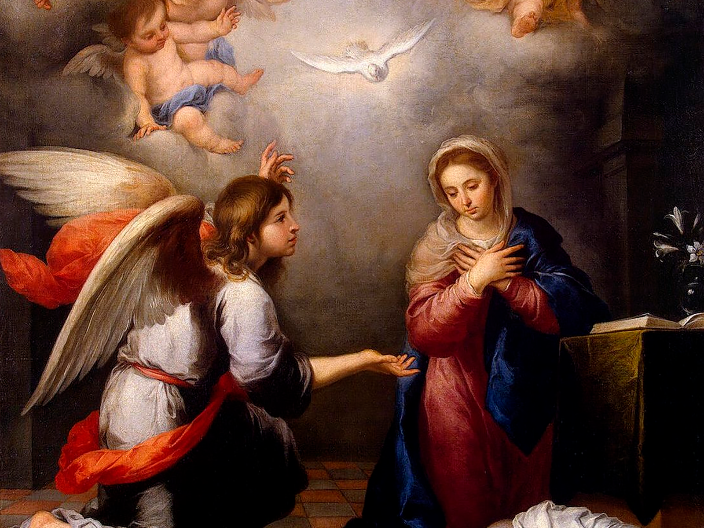
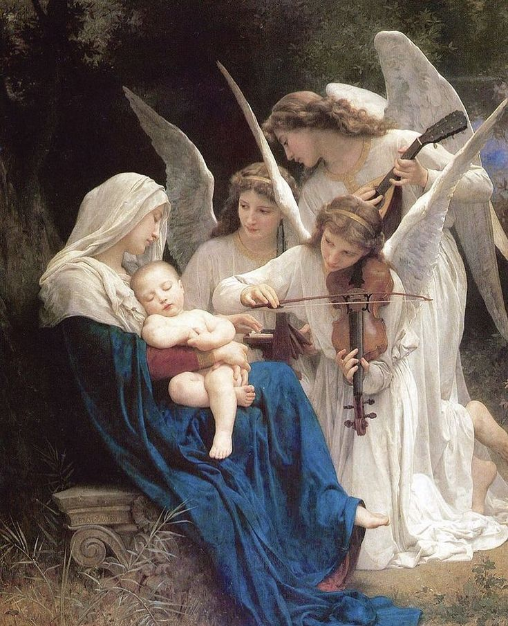
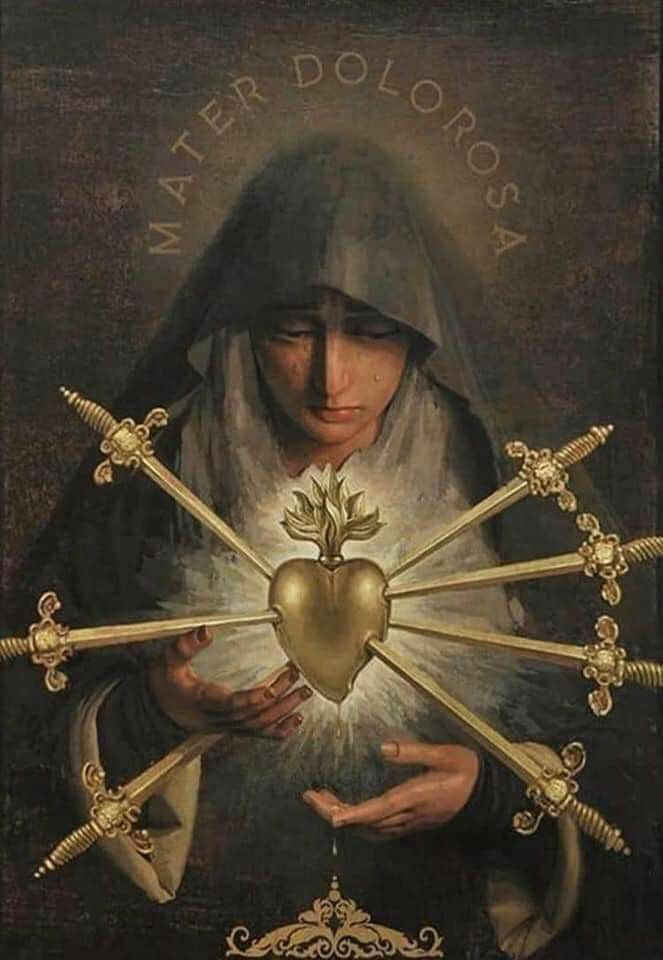

A Vida de Maria, Mãe de Jesus

Maria de Nazaré, conhecida como a Virgem Maria ou Santa Maria, é uma das figuras mais reverenciadas do Cristianismo. Como mãe de Jesus Cristo, ela ocupa um lugar único na história da salvação e na devoção cristã.
A origem humilde e a escolha divina
Maria nasceu em uma pequena cidade da Galileia chamada Nazaré. Pertencia a uma família simples, descendente da linhagem de Davi, mas vivia longe dos grandes centros religiosos e políticos de Israel. Ainda jovem, foi escolhida por Deus para uma missão que mudaria o rumo da humanidade. O Evangelho de Lucas narra que o anjo Gabriel apareceu a ela e anunciou: “Alegra-te, cheia de graça, o Senhor está contigo” (Lucas 1, 28). Esse anúncio marca o início de sua vida pública e espiritual como Mãe do Salvador.
A resposta de Maria ao chamado de Deus é um dos momentos mais belos e profundos da Escritura. Mesmo sem compreender completamente os desígnios divinos, ela respondeu com fé: “Eis aqui a serva do Senhor; faça-se em mim segundo a tua palavra” (Lucas 1, 38). Seu “sim” é livre, corajoso e cheio de confiança, tornando-se modelo de obediência para todos os cristãos.
A maternidade de Jesus
Após a anunciação, Maria visita sua prima Isabel, que também estava grávida por milagre. Isabel, movida pelo Espírito Santo, reconhece a grandeza daquela que trazia o Salvador em seu ventre: “Bendita és tu entre as mulheres e bendito é o fruto do teu ventre” (Lucas 1, 42). Em resposta, Maria entoa o Magnificat, um cântico de louvor que exalta a misericórdia de Deus e sua fidelidade aos humildes.
O nascimento de Jesus ocorre em Belém, em meio à pobreza e simplicidade de um estábulo. Maria envolve o Filho de Deus em faixas e o deita numa manjedoura, revelando a beleza de um Deus que se faz pequeno para estar próximo de todos. A maternidade de Maria não é apenas física, mas espiritual: ela acolhe, protege, alimenta e educa o Verbo encarnado com ternura e fé.
A presença discreta, mas firme, na vida de Cristo
Durante a infância de Jesus, Maria esteve presente em todos os momentos: na apresentação no templo, quando Simeão profetiza que uma espada transpassaria sua alma (Lucas 2, 35); na fuga para o Egito, protegendo o menino da perseguição de Herodes; no reencontro no templo, quando Jesus, com doze anos, é encontrado entre os doutores.
Na vida pública de Cristo, Maria aparece poucas vezes, mas sempre com profunda relevância. Em Caná da Galileia, é ela quem percebe a necessidade dos noivos e intercede junto a Jesus, mesmo sem pedir diretamente. Sua frase, “Fazei tudo o que Ele vos disser” (João 2, 5), é um convite a todos os discípulos para confiar plenamente em Cristo.
Aos pés da cruz
O momento mais doloroso da vida de Maria acontece no Calvário. Ali, ela vê seu Filho ser condenado, flagelado e crucificado. Permanece de pé aos pés da cruz, silenciosa, mas firme, compartilhando da dor e da entrega de Jesus. Nesse momento supremo, Cristo lhe confia a humanidade, representada na pessoa do discípulo amado: “Mulher, eis aí o teu filho... Eis aí tua mãe” (João 19, 26-27). Maria torna-se, assim, mãe espiritual de todos os cristãos.
Sua dor, anunciada por Simeão, se realiza plenamente ali, mas é também uma dor que dá frutos. Ao entregar o Filho ao Pai, Maria se oferece também. Ela não tenta impedir o sacrifício, mas participa dele com todo o seu ser, unindo-se ao plano de salvação de forma silenciosa e poderosa.
A glória celeste e a missão materna
Após a ressurreição de Cristo, Maria permanece com a comunidade dos discípulos. Em Atos dos Apóstolos (1, 14), é citada como parte do grupo que perseverava em oração no cenáculo, aguardando o Espírito Santo. Sua presença discreta mostra que ela é também a mãe da Igreja nascente.
A tradição cristã e o ensinamento da Igreja afirmam que, ao final de sua vida terrena, Maria foi elevada ao céu em corpo e alma. Essa verdade de fé, chamada de Assunção, reconhece que ela, por estar unida de forma única a Cristo, não conheceu a corrupção da morte.
Hoje, Maria continua sua missão de mãe espiritual. Ela intercede pelos fiéis, orienta-os a seguir Jesus com fidelidade e os sustenta em suas dificuldades. Não é adorada, mas profundamente venerada, como aquela que melhor viveu o Evangelho. Sua vida é uma pregação silenciosa da vontade de Deus, e seu coração materno permanece atento aos clamores da humanidade.
"Desde agora todas as gerações me chamarão bem-aventurada, porque o Poderoso fez grandes coisas em meu favor." (Lucas 1, 48-49)
A Anunciação do Anjo Gabriel

O Evento que Mudou a História
A Anunciação é um dos momentos mais importantes da história cristã, quando o anjo Gabriel anunciou a Maria que ela seria a mãe do Messias.
O cenário de silêncio e simplicidade
A Anunciação é um dos momentos mais sublimes das Escrituras. Ela acontece em Nazaré, uma aldeia simples da Galileia, longe dos grandes templos de Jerusalém e do poder de Roma. É ali, no silêncio de uma casa modesta, que o céu se inclina até a terra. Maria, uma jovem virgem prometida em casamento a José, leva uma vida piedosa e tranquila. Ela desconhece o que está prestes a acontecer, mas seu coração já está totalmente disponível para Deus.
Nesse ambiente de simplicidade, Deus escolhe iniciar o plano de salvação da humanidade. Ele não fala aos reis, nem se revela aos sacerdotes no templo. Escolhe, em vez disso, falar a uma mulher escondida aos olhos do mundo, mas preciosa diante dos olhos d’Ele.
A visita do mensageiro divino
O arcanjo Gabriel é enviado diretamente por Deus a Maria. A saudação que ele pronuncia rompe com todas as fórmulas conhecidas: “Alegra-te, cheia de graça, o Senhor está contigo” (Lucas 1, 28). É uma saudação que revela que Maria já está plenamente envolvida pela graça divina, desde antes da concepção de Jesus. Ela não é apenas favorecida, mas “cheia” de graça, indicando uma presença contínua da ação de Deus em sua vida.
Maria, ao ouvir essas palavras, não demonstra orgulho ou vaidade. Pelo contrário, o texto sagrado diz que ela “perturbou-se com essas palavras, e pôs-se a pensar no que significaria essa saudação” (Lucas 1, 29). A sua humildade se expressa na surpresa e na prudência diante do mistério.
"Não temas, Maria, pois encontraste graça diante de Deus. Eis que conceberás e darás à luz um filho, e lhe porás o nome de Jesus. Ele será grande e será chamado Filho do Altíssimo."
O anúncio do mistério
Gabriel, vendo a inquietação de Maria, a tranquiliza e anuncia a missão que mudará a história: “Não temas, Maria, porque encontraste graça diante de Deus. Eis que conceberás e darás à luz um filho, e lhe porás o nome de Jesus. Ele será grande e será chamado Filho do Altíssimo” (Lucas 1, 30-32). É a revelação do mistério da encarnação: Deus deseja vir ao mundo em carne humana, e quer fazê-lo por meio da liberdade de Maria.
O anúncio do anjo não impõe, mas propõe. Maria não é forçada, mas convidada. Ela questiona, não por falta de fé, mas para compreender: “Como acontecerá isso, se eu não conheço homem algum?” (Lucas 1, 34). A resposta de Gabriel é a explicação teológica e espiritual da concepção virginal: “O Espírito Santo virá sobre ti, e a força do Altíssimo te cobrirá com a sua sombra. Por isso, o Santo que nascer de ti será chamado Filho de Deus” (Lucas 1, 35).
O "sim" que transforma o mundo
Nesse instante, todo o céu aguarda. A resposta de Maria é aguardada com expectativa pelos anjos e, de modo misterioso, até pela criação. E então, com toda a liberdade de seu coração, Maria responde: “Eis aqui a serva do Senhor; faça-se em mim segundo a tua palavra” (Lucas 1, 38).
Esse “fiat”, essa entrega plena, marca o momento da Encarnação. A Palavra se fez carne no ventre de Maria. Deus se fez homem. A eternidade entrou no tempo. E tudo isso aconteceu porque uma jovem, em Nazaré, disse sim.
O Papel de Maria na Redenção

A participação singular de Maria no plano salvífico
Desde os primeiros momentos da história da salvação, a figura de Maria se destaca como parte do desígnio redentor de Deus. A redenção, realizada plenamente em Cristo, contou com a colaboração livre e consciente da Virgem Maria. Seu papel não substitui o de Cristo, mas o acompanha de forma única, como colaboradora próxima no mistério da salvação.
Ela foi escolhida por Deus não apenas para ser a mãe do Salvador, mas para participar ativamente, com sua fé e obediência, do processo que levou à salvação da humanidade. Santo Irineu, nos primeiros séculos do cristianismo, já reconhecia essa dimensão quando afirmava que “o nó da desobediência de Eva foi desatado pela obediência de Maria”.
A nova Eva: contraponto da desobediência
Maria é apresentada pelas Escrituras e pela Tradição da Igreja como a nova Eva. Assim como Eva, ao desobedecer, contribuiu para a queda da humanidade, Maria, com sua obediência perfeita, abre espaço para a reconciliação entre Deus e os homens. O “sim” de Maria à vontade divina é um ato decisivo, pois torna possível a Encarnação do Verbo.
No momento da Anunciação, ao dizer “Eis aqui a serva do Senhor; faça-se em mim segundo a tua palavra” (Lucas 1, 38), Maria não apenas aceita ser mãe de Jesus, mas se entrega inteiramente ao plano de Deus. Esse ato de fé e obediência foi necessário para que Cristo viesse ao mundo em carne humana, e por isso é considerado o início de sua participação ativa na obra redentora.
Presença constante no caminho da Cruz
Maria esteve ao lado de Jesus desde o princípio até o fim de sua missão terrena. Ela o acompanhou em silêncio, com firmeza, mesmo nos momentos mais difíceis. No Evangelho de João, vemos Maria aos pés da cruz (João 19, 25), unida à dor do Filho, oferecendo-se espiritualmente com Ele. Não foi uma presença passiva. Ali, ela sofreu no coração aquilo que Cristo sofria no corpo.
Essa união de sofrimento deu a Maria um papel espiritual de maternidade ampliada. Quando Jesus diz: “Mulher, eis aí o teu filho”, e ao discípulo: “Eis aí tua mãe” (João 19, 26-27), Ele não apenas cuida de sua mãe, mas a entrega como mãe de todos os discípulos, de toda a Igreja. Nesse momento, Maria torna-se mãe da humanidade redimida, mãe espiritual daqueles que seguem seu Filho.
Colaboradora com Cristo, único Redentor
A Igreja sempre ensinou que Cristo é o único Redentor da humanidade. No entanto, Maria colaborou com Ele de forma singular. São João Paulo II, na encíclica Redemptoris Mater, afirma que “a maternidade de Maria se insere precisamente no plano da redenção” e que ela cooperou “com um amor materno” na missão redentora do Filho. Essa cooperação é chamada de “mediação subordinada”, ou seja, totalmente dependente de Cristo e em nenhum momento independente.
Essa colaboração continua ainda hoje. Maria intercede por nós, como fez nas bodas de Caná (João 2, 1-11), quando interveio junto a Jesus em favor dos noivos. Ali, vemos antecipado seu papel de medianeira que aponta sempre para Cristo, dizendo: “Fazei tudo o que Ele vos disser”.
Um modelo para a Igreja e para cada cristão
O papel de Maria na redenção também ilumina o caminho de cada cristão. Ela é a primeira a crer, a primeira a seguir Cristo com total confiança e entrega. Por isso, é modelo da Igreja e de todos os fiéis. Sua vida mostra que a salvação é dom gratuito de Deus, mas que exige nossa resposta generosa e fiel.
Maria participou da redenção com a sua vida, com a sua fé, com a sua dor e com sua esperança. Ela é, assim, um espelho da Igreja chamada a cooperar com Cristo na salvação do mundo. E é também para cada um de nós sinal de que o caminho da salvação passa pela entrega confiante à vontade de Deus.
Aparições Marianas

Maria teria aparecido em diversos lugares ao longo da história, trazendo mensagens de conversão, oração e paz. Algumas das aparições mais conhecidas:
A presença contínua de Maria na história
As aparições de Nossa Senhora ao longo dos séculos são expressões da contínua solicitude materna de Maria pela humanidade. Embora não sejam necessárias para a fé, pois tudo que é essencial está contido na Revelação encerrada em Cristo e nas Escrituras, as aparições reconhecidas pela Igreja servem como chamados à conversão, à oração e ao retorno ao Evangelho. Elas não trazem novas verdades, mas reforçam aquilo que já foi revelado.
Desde os primeiros séculos, os cristãos acreditam que Maria, elevada ao céu em corpo e alma, permanece viva junto de seu Filho e pode, pela vontade de Deus, manifestar-se ao povo fiel. Essas manifestações, quando autênticas, estão sempre em sintonia com a fé da Igreja e confirmam a missão que Maria recebeu: conduzir todos a Cristo.
As aparições marianas e o apelo à conversão
A maioria das aparições de Nossa Senhora reconhecidas pela Igreja ocorre em momentos de crise moral, social ou espiritual. Em Fátima, em 1917, a Virgem apareceu a três crianças e pediu oração, especialmente o Rosário, penitência e consagração. A mensagem era clara: o coração da humanidade havia se afastado de Deus, e era preciso retornar a Ele com sinceridade e humildade. Ela revelou aos pastorinhos visões do inferno, reafirmando a existência da justiça divina, mas também prometendo a vitória de seu Imaculado Coração.
Em Lourdes, na França, em 1858, a Virgem apareceu a Bernadette Soubirous e se apresentou como a “Imaculada Conceição”, confirmando uma verdade dogmática recentemente proclamada pela Igreja. Suas palavras reforçavam a importância da pureza, da oração e da humildade. Maria sempre se manifesta aos humildes, aos pequenos, como o fez no Magnificat, onde proclamou: “Derrubou do trono os poderosos e exaltou os humildes” (Lucas 1, 52).
A manifestação silenciosa e a fidelidade ao Evangelho
As aparições autênticas nunca se impõem com espetacularidade. Elas são discretas, silenciosas, muitas vezes ignoradas pelos grandes do mundo. Isso está em sintonia com o modo como Deus costuma agir, como ensinado por Jesus: “Bem-aventurados os que creem sem ter visto” (João 20, 29). As manifestações de Maria são sinais para fortalecer a fé, nunca substituí-la.
Maria nunca aparece para atrair para si a atenção, mas para apontar para Cristo. Em todas as suas aparições, seu discurso se resume àquilo que disse em Caná: “Fazei tudo o que Ele vos disser” (João 2, 5). Ela é a serva fiel que continua intercedendo e cuidando dos filhos de Deus, como Mãe espiritual da Igreja.
Critérios da Igreja para o discernimento
A Igreja é prudente ao reconhecer uma aparição como verdadeira. Ela analisa os frutos espirituais, a fidelidade à doutrina católica, o comportamento dos videntes e a coerência com os ensinamentos de Cristo. Mesmo quando aprova, como fez em Fátima, Lourdes ou Guadalupe, ela sempre destaca que a Revelação pública foi concluída com Cristo e que essas aparições não acrescentam nada de novo à fé, mas servem como estímulo para vivê-la melhor.
Dessa forma, as aparições não são obrigações de fé, mas são acolhidas com carinho pelos fiéis como manifestações extraordinárias da misericórdia divina. São toques do céu em momentos de trevas, nos lembrando que não estamos sozinhos e que a Mãe do Salvador continua a acompanhar a história humana com amor maternal.
Um chamado para o tempo presente
As aparições de Maria são também um apelo para o nosso tempo. Vivemos num mundo que, muitas vezes, esquece Deus, banaliza o pecado e se distancia da verdade. Como em outros momentos da história, Maria vem ao encontro dos seus filhos, chamando à conversão, à oração e à confiança no amor de Deus. Sua presença é discreta, mas poderosa, e convida cada fiel a abrir o coração à graça e à vida nova em Cristo.
A devoção a Maria, especialmente por meio da oração do Rosário e da consagração a seu Imaculado Coração, é uma resposta concreta aos apelos de suas aparições. Ao fazer isso, não nos afastamos de Cristo, mas nos aproximamos mais dele, pois Maria é sempre o caminho mais curto e seguro para chegar ao Salvador.
Os Dogmas Marianos

Origem da controvérsia ariana
A heresia ariana surgiu no início do século IV, tendo como principal figura o presbítero Ário, de Alexandria, no Egito. Ele ensinava que o Filho de Deus, Jesus Cristo, não era consubstancial ao Pai, ou seja, não era Deus verdadeiro como o Pai, mas sim uma criatura elevada, a primeira e mais nobre de todas as criações. Essa doutrina causou profunda divisão na Igreja, pois negava a divindade plena de Cristo, atacando diretamente o coração da fé cristã.
Ário sustentava que houve um tempo em que o Filho não existia, o que contraria a revelação bíblica e a tradição apostólica. Essa afirmação se chocava com as palavras do Evangelho de João, que declara: “No princípio era o Verbo, e o Verbo estava com Deus, e o Verbo era Deus” (João 1, 1). Ao negar a eternidade do Verbo, Ário colocava Cristo como inferior ao Pai, subvertendo a doutrina trinitária.
O Concílio de Niceia e a definição da fé
Diante da expansão das ideias arianas, o imperador Constantino convocou o Primeiro Concílio de Niceia, no ano 325, reunindo bispos de todo o mundo cristão. O objetivo era definir a posição oficial da Igreja sobre a natureza de Cristo. Após longas discussões, o Concílio declarou que o Filho é “consubstancial” ao Pai, utilizando o termo grego homoousios, que significa “da mesma substância”. Assim, afirmava-se com clareza que Jesus Cristo é Deus verdadeiro de Deus verdadeiro, gerado, não criado, coeterno com o Pai.
O Símbolo Niceno, formulado nesse Concílio, tornou-se a expressão clara da fé cristã ortodoxa diante do arianismo. Este ensinava que Jesus era inferior a Deus e, portanto, não podia ser adorado como Deus, o que feria diretamente a fé monoteísta e a prática litúrgica dos primeiros cristãos, que sempre prestaram culto a Cristo.
A resistência dos arianos e a luta pela ortodoxia
Mesmo após o Concílio de Niceia, o arianismo continuou a se espalhar, principalmente com o apoio de certos imperadores e bispos influentes. Durante décadas, a Igreja viveu um tempo de intensa confusão e perseguição aos que defendiam a fé ortodoxa. Entre os grandes defensores da divindade de Cristo, destacou-se Santo Atanásio, bispo de Alexandria, que, mesmo exilado várias vezes, jamais deixou de proclamar que o Verbo era eterno e divino.
A luta contra o arianismo foi essencial para a formulação e amadurecimento da teologia trinitária. Os Padres da Igreja, como os Capadócios — São Basílio Magno, São Gregório de Nissa e São Gregório Nazianzeno — foram fundamentais para a explicação do mistério da Trindade, mantendo a unidade divina e a distinção das Pessoas.
O testemunho bíblico da divindade de Cristo
A doutrina ariana não resistiu à força da Sagrada Escritura, que, desde o início, proclama a divindade do Verbo. Além do prólogo do Evangelho de João, há outros textos que afirmam com clareza a natureza divina de Jesus. São Paulo escreve: “Nele habita corporalmente toda a plenitude da divindade” (Colossenses 2, 9) e também declara: “Cristo Jesus, que, existindo em forma de Deus, não considerou o ser igual a Deus como usurpação” (Filipenses 2, 6).
A fé cristã sempre reconheceu em Jesus o verdadeiro Deus encarnado, o Salvador do mundo. Negar isso seria esvaziar o mistério da encarnação, da redenção e da ressurreição. Pois somente Deus poderia vencer o pecado e a morte, e reconciliar plenamente a humanidade com o Pai.
A importância da ortodoxia para a fé
O combate ao arianismo não foi apenas uma questão teórica ou filosófica. Trata-se de um ponto essencial da fé cristã: a identidade de Jesus Cristo. Reconhecer sua divindade não é opcional, mas parte central do credo. A Igreja, guiada pelo Espírito Santo, preservou ao longo dos séculos essa verdade fundamental, que continua a ser proclamada em cada Missa: “Creio em um só Senhor, Jesus Cristo, Filho unigênito de Deus, nascido do Pai antes de todos os séculos. Deus de Deus, Luz da Luz, Deus verdadeiro de Deus verdadeiro”.
O dogma da Trindade, que afirma um só Deus em três Pessoas — Pai, Filho e Espírito Santo — é fruto da reflexão fiel da Igreja diante dos erros, como o arianismo. E nos recorda que a fé cristã não é fruto de convenções humanas, mas da revelação divina transmitida, protegida e vivida pela Igreja em todos os tempos.
A Devoção a Maria

A devoção a Maria na história da fé cristã
A devoção a Maria, Mãe de Jesus, é uma das expressões mais profundas e antigas da espiritualidade cristã. Desde os primeiros séculos da Igreja, os fiéis compreenderam que Maria, por sua proximidade única com Cristo, ocupa um lugar especial no mistério da salvação. O amor e a veneração por Maria não são frutos de exagero sentimental, mas brotam da contemplação do papel que ela exerceu no plano divino e da sua contínua intercessão em favor dos fiéis.
A Igreja reconhece que toda a honra prestada a Maria está, de fato, direcionada ao seu Filho, pois Maria não é adorada como uma deusa, mas venerada como Mãe de Deus, a Theotókos, como proclamado no Concílio de Éfeso no ano 431. A honra a Maria não diminui a glória de Cristo, mas a exalta, pois é impossível amar verdadeiramente o Filho e ignorar a Mãe que Ele mesmo nos deu.
Maria como modelo de fé e obediência
A Sagrada Escritura apresenta Maria como a serva fiel que respondeu com prontidão ao chamado de Deus. Sua resposta ao anjo Gabriel — “Eis aqui a serva do Senhor. Faça-se em mim segundo a tua palavra” (Lucas 1, 38) — é um exemplo sublime de fé e entrega. Maria não compreendeu todos os desígnios de Deus, mas confiou inteiramente em Sua vontade, tornando-se modelo de obediência para toda a humanidade.
Essa atitude de Maria é celebrada não apenas como um momento de submissão, mas como um ato de liberdade madura, pois ela escolheu cooperar com o plano salvífico de Deus. É por isso que São João Paulo II afirmou que Maria viveu a fé como peregrina, e sua caminhada se deu em meio a alegrias, mas também a sofrimentos, como quando ouviu de Simeão que uma espada transpassaria sua alma (Lucas 2, 35).
A maternidade espiritual de Maria
No momento mais doloroso da vida de Cristo, quando Ele estava na cruz, Maria permaneceu de pé, firme em sua fé. E foi naquele instante que o próprio Jesus, em um gesto de profundo amor, confiou Sua Mãe ao discípulo amado, dizendo: “Mulher, eis aí o teu filho” e, ao discípulo: “Eis aí tua mãe” (João 19, 26-27). A tradição da Igreja reconhece nesse gesto a entrega de Maria como mãe espiritual de todos os cristãos. Ela, que foi Mãe do Salvador, torna-se Mãe dos salvos, intercedendo por eles e os conduzindo até Jesus.
Esse aspecto da maternidade espiritual fundamenta uma das razões centrais da devoção mariana. Os cristãos recorrem a Maria com confiança, sabendo que ela está ao lado do Filho e intercede por seus filhos com ternura e eficácia. Como nas Bodas de Caná, onde ela interveio a favor dos noivos e disse: “Fazei tudo o que Ele vos disser” (João 2, 5), Maria continua a indicar o caminho que leva a Cristo.
O culto mariano e sua distinção
A Igreja ensina que existem diferentes formas de culto: a adoração (latria), que é devida somente a Deus; a veneração (dulia), que é prestada aos santos; e a hiperdulia, que é a veneração especial reservada à Virgem Maria, por sua singular dignidade. Isso significa que a devoção a Maria não é idolatria, como às vezes acusam os que não compreendem a doutrina católica, mas uma forma de honrar aquela que foi escolhida por Deus de modo único.
Essa devoção se expressa em diversas práticas piedosas, como o Santo Rosário, as ladainhas, os escapulários, as consagrações, os cânticos e festas litúrgicas. Todas essas expressões buscam fortalecer a fé e aproximar os fiéis de Cristo, através da meditação dos mistérios de Sua vida, acompanhados do olhar e da intercessão de Sua Mãe.
Maria na vida da Igreja e dos fiéis
A presença de Maria é constante na vida da Igreja. Nos momentos decisivos da história do cristianismo, os fiéis sempre recorreram à sua proteção. Aparições reconhecidas, como as de Lourdes, Fátima e Guadalupe, confirmam essa proximidade maternal. Nessas manifestações, Maria não apresenta novidades doutrinais, mas reforça o chamado à conversão, à oração e à fidelidade ao Evangelho.
Muitos santos foram profundamente marianos. São Luís Maria Grignion de Montfort, por exemplo, ensinava que a consagração total a Jesus por meio de Maria era o caminho mais perfeito para alcançar a santidade. São João Paulo II, cujo lema era “Totus Tuus”, entregou inteiramente sua missão à Mãe de Deus. Essa devoção não os afastou de Cristo, mas os uniu mais intensamente a Ele.
A importância da devoção mariana hoje
Em um mundo cada vez mais distante de Deus, a devoção a Maria continua sendo um farol de esperança. Ela nos ensina a escutar a Palavra, a perseverar na oração e a confiar mesmo diante das provações. A Mãe de Jesus é também Mãe da Igreja, e, por isso, seu papel permanece atual. Como intercessora, ela apresenta nossas súplicas ao Pai e nos ajuda a viver com fidelidade nossa vocação cristã.
Amar Maria é seguir o exemplo do próprio Cristo, que a amou com ternura e respeito. É confiar naquela que foi cheia da graça, bendita entre todas as mulheres, e que nos aponta, sempre, para seu Filho. Como dizia São Bernardo de Claraval: “Se segues Maria, não te desviarás; se a invocas, não desesperarás; se pensas nela, não errarás; se ela te sustenta, não cairás; se ela te protege, nada temerás”.